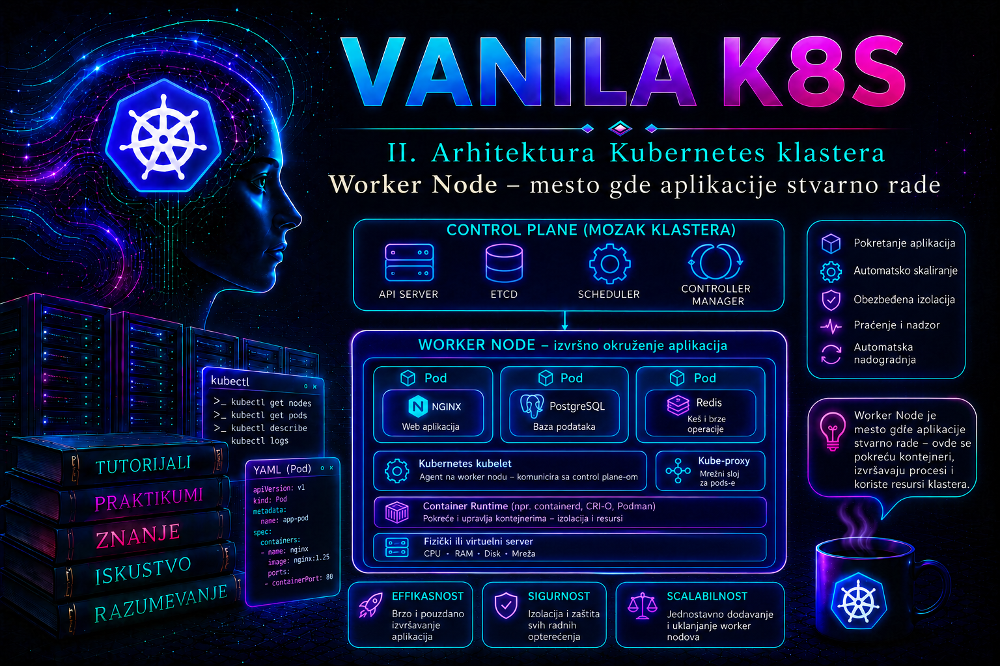

Vanilla Kubernetes

Control plane donosi odluke o željenom stanju klastera, ali se stvarni procesi aplikacije izvršavaju na worker node računarima. Na njima se preuzimaju kontejnerske slike, kreiraju Pod sandbox okruženja, pokreću kontejneri, montiraju volumeni, primenjuju mrežna pravila, izvršavaju zdravstvene provere i sprovode ograničenja procesora, memorije i lokalnog skladišta. Zbog toga worker node nije samo „server na kome rade kontejneri”, već kontrolisana izvršna jedinica koja povezuje Kubernetes API, operativni sistem, container runtime, mrežni dodatak, skladišne drajvere i stvarne aplikacione procese.
Administrator mora da razlikuje tri stanja: node koji je registrovan u klasteru, node koji je spreman da prihvata nove Pod-ove i node koji zaista može pouzdano da izvršava dodeljeno opterećenje. Objekat Node može postojati u API-ju, a da je kubelet nedostupan. Node može imati stanje Ready, ali nedovoljno slobodnog prostora za novu sliku. Može biti tehnički zdrav, ali označen kao SchedulingDisabled zbog planiranog održavanja. Zbog toga se stanje worker node-a nikada ne procenjuje na osnovu jedne kolone ili jedne komande.
Uloga worker node-a u arhitekturi klastera
Kada scheduler izabere worker node za novi Pod, on upisuje vezu između Pod-a i izabranog node-a u Kubernetes API. Scheduler ne pokreće kontejner i ne prijavljuje se na server. Kubelet na izabranom node-u posmatra API, prepoznaje da mu je dodeljen novi Pod i započinje lokalno usaglašavanje stvarnog stanja sa deklarisanim stanjem. Preko Container Runtime Interface-a, odnosno CRI-ja, zahteva od container runtime-a da pripremi Pod sandbox, preuzme potrebne slike i pokrene kontejnere. Preko integracija sa mrežnim i skladišnim komponentama omogućava mrežni interfejs i montiranje volumena.
Worker node zbog toga mora da ima stabilnu vezu ka API serveru, ispravno vreme, funkcionalan DNS, podržan operativni sistem, kompatibilan container runtime i pravilno podešene kernel, cgroup i mrežne funkcije. Gubitak jedne od tih zavisnosti može proizvesti različite simptome: kubelet ne može da registruje node, Pod ostaje u stanju ContainerCreating, slika ne može da se preuzme, volumen ne može da se montira ili aplikacija radi lokalno, ali nije dostupna preko Service objekta.
U tipičnoj enterprise implementaciji worker node je Linux virtuelna ili fizička mašina. Kubernetes podržava i Windows worker node-ove, ali Linux i Windows Pod-ovi ne koriste isti operativni sistem niti se proizvoljno izvršavaju na bilo kom node-u. Mešoviti klaster zahteva odgovarajuće oznake, selektore, kompatibilne slike, CNI podršku i odvojene operativne procedure. Ova lekcija koristi Linux worker node-ove sa systemd servisima, containerd runtime-om i Kubernetes klasterom postavljenim pomoću kubeadm-a.
Komponente koje rade na worker node-u
Kubelet.
Kubelet je primarni agent node-a. Registruje node u API serveru, prati PodSpec objekte dodeljene tom node-u i pokušava da obezbedi da odgovarajući kontejneri budu pokrenuti i zdravi. On izvršava liveness, readiness i startup provere, upravlja lokalnim Pod direktorijumima, prijavljuje stanje node-a i Pod-ova, pokreće postupke node-pressure eviction i komunicira sa container runtime-om preko CRI-ja. Kubelet ne upravlja kontejnerima koji nisu deo njegovog izvora željenog stanja, osim u meri potrebnoj za lokalno čišćenje i upravljanje resursima.
U kubeadm okruženju kubelet se obično izvršava kao systemd servis. Njegova konfiguracija nije samo skup komandnih opcija; većina operativnih parametara nalazi se u kubelet konfiguracionom fajlu, dok systemd drop-in konfiguracija definiše način pokretanja i putanje do kubeconfig i konfiguracionih fajlova. Ručno menjanje opcija bez razumevanja načina na koji ih kubeadm generiše može dovesti do razilaženja node-ova ili do gubitka promena pri narednom upgrade-u.
Container runtime.
Container runtime pokreće i zaustavlja kontejnere, upravlja slikama i implementira CRI pozive koje šalje kubelet. Savremeni Kubernetes zahteva CRI-kompatibilan runtime. U referentnom okruženju koristi se containerd sa uključenim CRI dodatkom. Stari ugrađeni dockershim uklonjen je iz Kubernetes projekta još u verziji 1.24, pa instaliran Docker Engine sam po sebi više ne predstavlja direktan Kubernetes runtime bez dodatnog CRI sloja. Administrator zato proverava konkretan CRI endpoint, a ne samo postojanje komande docker.
Mrežna komponenta.
CNI dodatak priprema mrežu za Pod: dodeljuje adresu, povezuje mrežni namespace kontejnera sa mrežom node-a i primenjuje funkcije koje zavise od izabranog rešenja. kube-proxy, kada se koristi, održava lokalna pravila potrebna za implementaciju Kubernetes Service apstrakcije. Neke mrežne platforme mogu zameniti deo ili celokupnu funkciju kube-proxy-ja eBPF mehanizmima, pa odsustvo kube-proxy Pod-a nije automatski kvar. Administrator mora znati koji je mrežni model namerno implementiran u konkretnom klasteru.
CSI i node dodatne komponente.
Container Storage Interface node dodatak priprema i montira volumene na node-u. Device plugin-ovi objavljuju specijalizovane resurse, kao što su GPU uređaji. Agenti za prikupljanje logova, bezbednosni senzori, monitoring exporter-i i mrežni daemon-i često se izvršavaju kao DaemonSet, po jedan Pod na svakom odgovarajućem node-u. Njihov kvar može ostaviti aplikaciju aktivnom, ali klaster bez telemetrije, mrežne zaštite ili mogućnosti montiranja novih volumena.
Tok lokalnog izvršavanja Pod-a
- Scheduler postavlja
spec.nodeName; od tog trenutka Pod je vezan za konkretan node, ali kontejneri još ne moraju postojati. - Kubelet kroz watch/list komunikaciju sa API serverom uočava dodeljeni Pod, proverava njegovu specifikaciju i pribavlja potrebne Secret, ConfigMap i volume podatke u granicama svojih ovlašćenja.
- Preko CRI-ja zahteva kreiranje Pod sandbox-a. Runtime pokreće sandbox infrastrukturu, a CNI dodatak iz mrežnog namespace-a priprema interfejs, IP adresu i rute.
- Kubelet, runtime i CSI node dodatak pripremaju volumene; neuspeh u ovoj fazi tipično ostavlja Pod u
ContainerCreatinguz događajeFailedMountiliFailedAttachVolume. - Runtime preuzima slike i kreira kontejnere. Kubelet zatim izvršava startup, readiness i liveness probe provere i objavljuje Pod status API serveru.
- Kada readiness uslov postane uspešan, odgovarajući EndpointSlice može uključiti Pod adresu kao spreman backend Service objekta. Kube-proxy ili izabrana zamenska data-plane implementacija na node-ovima zatim sprovodi Service prosleđivanje.
Ovaj redosled je dijagnostička mapa. Pending bez dodeljenog node-a prvenstveno vodi ka scheduler događajima; dodeljen Pod u ContainerCreating vodi ka kubelet, CRI, CNI i CSI dokazima; Running Pod koji nije Ready vodi ka probe rezultatima i aplikacionim logovima; spreman Pod koji nije dostupan preko Service-a vodi ka EndpointSlice, Service i lokalnom data plane-u. Time se izbegava nasumično restartovanje komponenti koje još nisu ni učestvovale u neuspešnoj fazi.
Kube-proxy i lokalni Service data plane
Kube-proxy posmatra Service i EndpointSlice objekte i programira lokalni mrežni data plane tako da ClusterIP i drugi Service tokovi stignu do odgovarajućih backend Pod-ova. On nije klasičan korisnički proxy kroz koji nužno prolazi svaki paket; uobičajeno konfiguriše kernel pravila i prosleđivanje. Stvarno ponašanje zavisi od operativnog sistema, izabranog proxy režima i mrežne platforme, pa administrator mora proveriti aktivnu KubeProxyConfiguration umesto da pretpostavi iptables ili IPVS samo na osnovu starijih tutorijala.
Nftables režim je stabilan od Kubernetes 1.33, zahteva Linux kernel 5.13 ili noviji i u aktuelnoj upstream dokumentaciji predstavlja preporučenu zamenu za IPVS, ali kompatibilnost izabranog mrežnog dodatka i razlike u NodePort ponašanju moraju se proveriti pre migracije. IPVS režim je označen kao zastareo od Kubernetes 1.35; i dalje se sreće u postojećim klasterima, ali se ne uvodi automatski samo zato što su IPVS kernel moduli prisutni. eBPF mrežna rešenja mogu raditi bez kube-proxy-ja; tada se Service mapa, health i troubleshooting proveravaju alatima te platforme. Zato se kvar Service pristupa ne zaključuje iz samog statusa kube-proxy Pod-a: proveravaju se EndpointSlice objekti, spremnost backend-a, DNS, lokalna pravila ili data-plane mape i mrežna politika.
Kako Node objekat predstavlja stvarni server
Kubernetes Node objekat je API reprezentacija izvršnog računara. On sadrži identitet, oznake, taint-ove, prijavljeni kapacitet, raspoložive resurse za Pod-ove, adrese, informacije o operativnom sistemu, kernelu, kubeletu i container runtime-u, kao i skup uslova koji opisuju trenutno zdravlje. Brisanje Node objekta ne gasi fizičku ili virtuelnu mašinu. Obrnuto, gašenje mašine ne briše odmah Node objekat iz API-ja.
Polje capacity opisuje ukupno prijavljene resurse, dok allocatable predstavlja deo koji scheduler može da koristi za Pod zahteve. Razlika nastaje zbog resursa rezervisanih za operativni sistem, kubelet i druge sistemske procese, kao i zbog eviction pragova. U ozbiljnom klasteru nije poželjno izložiti Pod-ovima svu fizičku memoriju i procesorski kapacitet. Bez sistemskih rezervi, aplikaciono opterećenje može iscrpeti node i onemogućiti upravo servise potrebne za njegov oporavak.
Node heartbeat se prenosi pomoću statusa Node objekta i Lease objekta u namespace-u kube-node-lease. Lease omogućava efikasnije, česte obnove prisutnosti bez stalnog upisivanja celog Node statusa. Ako control plane dovoljno dugo ne prima heartbeat, stanje Ready prelazi u Unknown, a node controller može dodati odgovarajuće taint-ove i pokrenuti dalji postupak u skladu sa toleracijama Pod-ova i politikom klastera.
Node uslovi i razlikovanje simptoma
| Uslov | Normalno stanje | Značenje odstupanja | Prva provera |
|---|---|---|---|
Ready |
True |
False znači da je kubelet prijavio nespremnost; Unknown najčešće znači da control plane ne dobija izveštaje. |
Kubelet servis, mrežna veza ka API serveru, sertifikati i vreme. |
MemoryPressure |
False |
Raspoloživa memorija je prešla konfigurisan eviction prag. | Potrošnja memorije, requests/limits, kernel OOM događaji i eviction poruke. |
DiskPressure |
False |
Nedovoljno prostora ili inode-a na nodefs/imagefs/containerfs sloju. | df -h, df -i, runtime slike, Pod logovi i lokalni ephemeral podaci. |
PIDPressure |
False |
Node se približio raspoloživom broju procesa. | Broj procesa, runaway procesi, PID limit i broj procesa u kontejnerima. |
NetworkUnavailable |
False ili odsutan, zavisno od CNI-ja |
Mreža node-a još nije pravilno konfigurisana ili CNI prijavljuje problem. | CNI DaemonSet, CNI konfiguracija, rute, interfejsi i mrežni logovi. |
Node condition nije dijagnoza uzroka, već sažet signal. Na primer, DiskPressure=True ne govori da li su prostor zauzele slike, kontejnerski logovi, aplikacioni emptyDir volumeni ili datoteke van Kubernetes kontrole. Administrator najpre potvrđuje signal u Node statusu, zatim meri stvarno stanje operativnog sistema i tek potom bira korektivnu radnju.
Resursi, cgroups i kvalitet servisa
Scheduler odlučuje da li Pod može biti postavljen na node prvenstveno na osnovu deklarisanih zahteva, a ne na osnovu trenutne prosečne potrošnje. Ako kontejner zahteva 2 GiB memorije, scheduler rezerviše taj iznos u računu node-a čak i kada proces trenutno koristi 200 MiB. Zahtev koji nije definisan može omogućiti preveliku koncentraciju Pod-ova, dok nerealno visok zahtev može ostaviti kapacitet neiskorišćenim.
Kubelet i container runtime sprovode ograničenja pomoću funkcija operativnog sistema, a na Linux node-ovima prvenstveno pomoću cgroups. CPU limit se sprovodi ograničavanjem raspoloživog procesorskog vremena, pa kontejner može biti usporen. Prekoračenje memorijskog limita ne može se rešiti istim mehanizmom; proces može biti završen OOM mehanizmom, što se na nivou kontejnera često vidi kao OOMKilled.
Kubernetes dodeljuje Pod-u QoS klasu Guaranteed, Burstable ili BestEffort. Ona utiče na izbor kandidata za eviction pri pritisku resursa, ali nije jedini faktor. Kubelet uzima u obzir prekoračenje zahteva, prioritet Pod-a i relativnu potrošnju. Zbog toga oznaka Guaranteed smanjuje rizik od ranog eviction-a, ali ne predstavlja apsolutnu garanciju da Pod nikada neće biti završen.
Ephemeral storage takođe mora da se planira. Writable slojevi kontejnera, emptyDir volumeni i node-level kontejnerski logovi koriste lokalno skladište. Aplikacija koja nema ograničenje lokalnog ephemeral prostora može popuniti node i uticati na sve Pod-ove na njemu. PersistentVolume nije zamena za pravilno upravljanje lokalnim logovima i privremenim podacima.
Oznake, taint-ovi i izbor node-a
Label opisuje osobinu node-a i može se koristiti za izbor položaja Pod-a. Taint odbija Pod-ove koji nemaju odgovarajući toleration. Ovi mehanizmi imaju različitu namenu: label i affinity izražavaju gde workload treba ili preferira da radi, dok taint štiti node od neodgovarajućeg workload-a. Toleration samo dozvoljava da Pod bude razmatran za tainted node; ne garantuje da će baš tamo biti raspoređen.
Oznake koje utiču na bezbednosnu izolaciju ne treba nekontrolisano prepuštati kubeletu ili lokalnom administratoru node-a. Ako kompromitovan node može sebi da dodeli oznaku poput workload-zone=trusted, može privući osetljive Pod-ove. Za takve odluke koriste se kontrolisani prefiksi oznaka, odgovarajuća autorizacija i NodeRestriction mehanizmi. Promena label-a, taint-a ili toleration-a mora se tretirati kao promena politike raspoređivanja, a ne kao kozmetičko uređivanje inventara.
Planirano održavanje i bezbedno pražnjenje node-a
kubectl cordon označava node kao nepogodan za novo raspoređivanje, ali ne uklanja postojeće Pod-ove. kubectl drain dodatno pokušava da eviktuje odgovarajuće Pod-ove koristeći Eviction API i poštujući PodDisruptionBudget gde je primenljivo. DaemonSet Pod-ovi se uobičajeno ne uklanjaju drain postupkom i zahtevaju opciju --ignore-daemonsets. Statički, odnosno mirror Pod-ovi ne mogu se ukloniti preko API servera.
Drain nije bezuslovna dozvola za gašenje node-a. Ako je jedina replika aplikacije lokalno vezana za node, ako Pod koristi nezaštićene lokalne podatke, ako PodDisruptionBudget ne dozvoljava prekid ili ako nema kapaciteta na drugim node-ovima, operacija može stati ili izazvati gubitak dostupnosti. Opcija --delete-emptydir-data potvrđuje da će lokalni podaci iz emptyDir volumena biti izgubljeni. Opcija --force može ukloniti Pod-ove kojima ne upravlja controller i ne sme se rutinski koristiti.
Bezbedan redosled je: potvrditi redundansu i kapacitet, proveriti PodDisruptionBudget, cordon-ovati node, izvršiti drain, obaviti promenu, proveriti lokalne servise, vratiti node u Ready, uncordon-ovati ga i potvrditi da prima novi workload. Preskakanje završne validacije može ostaviti node formalno dostupan, ali bez funkcionalne CNI, CSI ili runtime komponente.
Logovi i izvori podataka za dijagnostiku
Na systemd Linux node-u kubelet i containerd logovi čitaju se pomoću journalctl. Kubelet log pokazuje registraciju, statusne izveštaje, probe, mount greške, eviction odluke i CRI probleme. Containerd log otkriva greške pri radu runtime-a, snapshotter-a, image pull operacijama i CRI komunikaciji. Aplikacioni standardni izlaz i greške dostupni su pomoću kubectl logs, dok se node-level kontejnerski logovi uobičajeno nalaze ispod /var/log/pods i preko veza u /var/log/containers.
Alat crictl omogućava pregled CRI runtime-a kada je Kubernetes API nedostupan ili kada je potrebno uporediti ono što kubelet očekuje sa onim što runtime zaista vidi. On mora biti konfigurisan za tačan runtime i image endpoint. Korišćenje podrazumevanog automatskog ispitivanja više endpoint-a produžava dijagnostiku i može dati zbunjujuće rezultate na serveru sa ostacima prethodnih runtime instalacija.
Administrator ne počinje troubleshooting brisanjem Pod-a ili restartovanjem svih servisa. Najpre čuva stanje: vreme nastanka, Node conditions, događaje, spisak Pod-ova, zauzeće resursa i relevantne logove. Restart može ukloniti simptom i istovremeno izbrisati najvredniji trag uzroka.
Integrisani praktikum – bezbedno održavanje worker node-a i provera povratka u rad
Poslovni i tehnički kontekst.
Produkcioni tim održava tročlani worker sloj: k8s-worker-01, k8s-worker-02 i k8s-worker-03. Na njima radi interna aplikacija inventory-web u namespace-u inventory-prod. Potrebno je izvršiti planirano ažuriranje operativnog sistema na node-u k8s-worker-02, restartovati server i dokazati da se node bezbedno vratio u klaster. Aplikacija ima tri replike i PodDisruptionBudget koji zahteva najmanje dve raspoložive replike.
Cilj.
Izvesti jedan worker node iz raspoređivanja bez prekida dostupnosti aplikacije, prikupiti početne dokaze, isprazniti node kontrolisanim eviction postupkom, simulirati održavanje restartovanjem kubelet servisa, vratiti node u rad i izvršiti negativni test koji potvrđuje da cordon zaista sprečava novo raspoređivanje.
Referentno okruženje.
- Kubernetes klaster sa tri Linux worker node-a i najmanje jednim odvojenim control plane node-om;
- containerd kao CRI runtime sa endpoint-om
unix:///run/containerd/containerd.sock; - systemd, instalirani
kubectlicrictlalati; - namespace
inventory-prod, Deploymentinventory-webi Serviceinventory-web; - administratorska radna stanica sa ispravnim kubeconfig fajlom i SSH pristupom node-u
k8s-worker-02.
Potrebna prava.
Kubernetes nalog mora moći da čita Node, Pod, Event, Deployment i PodDisruptionBudget objekte, menja spec.unschedulable na ciljnom Node objektu i kreira Eviction zahteve za Pod-ove. Za praktikum je prihvatljiv namenski cluster-admin nalog u kontrolisanom lab okruženju; u produkciji treba koristiti užu RBAC ulogu za node maintenance. Operativni nalog mora imati odobreni sudo pristup za pregled systemd servisa i restart kubelet-a. Promena mora biti evidentirana u sistemu za upravljanje promenama.
Preduslovi.
- Postoji potvrđen maintenance prozor i vlasnik aplikacije je obavešten.
- Na druga dva worker node-a postoji dovoljno allocatable CPU i memorije za eviktovane Pod-ove.
- Aplikacija ne zavisi od nezaštićenih lokalnih podataka na
k8s-worker-02. - Control plane i mrežni dodatak su zdravi.
- Komanda
kubectl auth can-i create pods/eviction --all-namespacesvraćayes.
-
Kreiranje referentne aplikacije i politike prekida.
U lab klasteru napravite namespace, Deployment sa tri replike, Service i PodDisruptionBudget. Pod anti-affinity preferira raspodelu replika na različite node-ove, ali je ne čini obaveznom kako praktikum ne bi ostao blokiran u manjem okruženju.
Validacija: Deployment mora imati tri dostupne replike, a PDB mora prikazati najmanje dve dozvoljene raspoložive replike i, u stabilnom stanju, jednu dozvoljenu dobrovoljnu disrupciju.mkdir -p "$HOME/worker-node-lab" cat > "$HOME/worker-node-lab/inventory-web.yaml" <<'EOF' apiVersion: v1 kind: Namespace metadata: name: inventory-prod --- apiVersion: apps/v1 kind: Deployment metadata: name: inventory-web namespace: inventory-prod spec: replicas: 3 selector: matchLabels: app: inventory-web template: metadata: labels: app: inventory-web spec: affinity: podAntiAffinity: preferredDuringSchedulingIgnoredDuringExecution: - weight: 100 podAffinityTerm: labelSelector: matchLabels: app: inventory-web topologyKey: kubernetes.io/hostname containers: - name: web image: nginx:1.27-alpine ports: - name: http containerPort: 80 resources: requests: cpu: 100m memory: 64Mi ephemeral-storage: 64Mi limits: cpu: 500m memory: 256Mi ephemeral-storage: 256Mi readinessProbe: httpGet: path: / port: http initialDelaySeconds: 3 periodSeconds: 5 livenessProbe: httpGet: path: / port: http initialDelaySeconds: 10 periodSeconds: 10 --- apiVersion: v1 kind: Service metadata: name: inventory-web namespace: inventory-prod spec: selector: app: inventory-web ports: - name: http port: 80 targetPort: http --- apiVersion: policy/v1 kind: PodDisruptionBudget metadata: name: inventory-web-pdb namespace: inventory-prod spec: minAvailable: 2 selector: matchLabels: app: inventory-web EOF kubectl apply -f "$HOME/worker-node-lab/inventory-web.yaml"kubectl rollout status deployment/inventory-web -n inventory-prod --timeout=180s kubectl get deployment,pod,pdb -n inventory-prod -o wide -
Početna provera klastera i ciljnog node-a.
Pre promene sačuvajte početno stanje. Sva tri worker node-a treba da budu
Ready, ak8s-worker-02ne sme već biti označen kao nepogodan za raspoređivanje.
Validacija: U izlazukubectl get nodes -o wide kubectl describe node k8s-worker-02 > "$HOME/worker-node-lab/k8s-worker-02-before.txt" kubectl get pods -A -o wide --field-selector spec.nodeName=k8s-worker-02 kubectl get events -A --sort-by=.metadata.creationTimestamp | tail -n 50kubectl describe nodeočekuju seReady=True,MemoryPressure=False,DiskPressure=FalseiPIDPressure=False. Neočekivano odstupanje zaustavlja planirano održavanje i pretvara postupak u incidentnu dijagnostiku.kubectl get node k8s-worker-02 \ -o custom-columns='NAME:.metadata.name,UNSCHEDULABLE:.spec.unschedulable,READY:.status.conditions[?(@.type=="Ready")].status,MEMORY:.status.conditions[?(@.type=="MemoryPressure")].status,DISK:.status.conditions[?(@.type=="DiskPressure")].status,PID:.status.conditions[?(@.type=="PIDPressure")].status' -
Provera kapaciteta i rasporeda aplikacije.
Utvrdite da li druge mašine mogu da prime workload. Deo
Allocated resourcesu opisu node-a prikazuje zbir requests i limits, ali ne zamenjuje monitoring stvarne potrošnje.
Validacija: Deployment mora imati trikubectl describe node k8s-worker-01 kubectl describe node k8s-worker-03 kubectl get pods -n inventory-prod -l app=inventory-web -o wide kubectl get pdb inventory-web-pdb -n inventory-prod -o yamlReadyPod-a, adisruptionsAllowedu PDB statusu mora biti najmanje1. Vrednost0znači da bezbedan drain trenutno može biti blokiran i da se prvo mora obnoviti redundansa. -
Provera lokalnih servisa i CRI veze.
Prijavite se na ciljni server i proverite kubelet, containerd, prostor, inode-e i runtime endpoint. Ove informacije predstavljaju lokalnu osnovu za poređenje nakon promene.
Validacija: Oba servisa vraćajussh admin@k8s-worker-02 sudo systemctl is-active kubelet sudo systemctl is-active containerd sudo crictl --runtime-endpoint unix:///run/containerd/containerd.sock info sudo crictl --runtime-endpoint unix:///run/containerd/containerd.sock pods df -h df -i free -h timedatectl status exitactive, CRI info se završava bez greške, kritični filesystem-i imaju operativnu rezervu prostora i inode-a, a vreme je sinhronizovano. Ne postoji univerzalni procenat za svaki sistem, ali ulazak u maintenance sa više od 85% zauzeća zahteva objašnjenje i procenu rasta. -
Cordon node-a.
Cordon sprečava novo standardno raspoređivanje na ciljnom node-u, ali ne prekida postojeće Pod-ove. Ovaj korak stvara stabilnu tačku pre drain operacije.
Validacija: Node treba da se prikaže kaokubectl cordon k8s-worker-02Ready,SchedulingDisabled, a poljespec.unschedulablemora bititrue.kubectl get node k8s-worker-02 kubectl get node k8s-worker-02 -o jsonpath='{.spec.unschedulable}{"\n"}' -
Negativni test raspoređivanja.
Kreirajte privremeni Pod koji izričito zahteva
k8s-worker-02. Pošto je node cordon-ovan, Pod treba da ostane u stanjuPending. Test ne koristi toleration koji bi zaobišao unschedulable taint.
Očekivani rezultat: Pod ostajecat > "$HOME/worker-node-lab/cordon-negative-test.yaml" <<'EOF' apiVersion: v1 kind: Pod metadata: name: cordon-negative-test namespace: inventory-prod spec: nodeSelector: kubernetes.io/hostname: k8s-worker-02 containers: - name: test image: busybox:1.36 command: ["sh", "-c", "sleep 600"] restartPolicy: Never EOF kubectl apply -f "$HOME/worker-node-lab/cordon-negative-test.yaml" sleep 5 kubectl get pod cordon-negative-test -n inventory-prod -o wide kubectl describe pod cordon-negative-test -n inventory-prodPending, a scheduler događaj navodi da je ciljni node unschedulable. Ako Pod postaneRunning, proverite da li manifest zaista koristi odgovarajući hostname label i da li Pod ima toleration koji dozvoljava raspoređivanje.kubectl delete pod cordon-negative-test -n inventory-prod -
Bezbedan drain.
Drain eviktuje workload Pod-ove i poštuje PodDisruptionBudget. Opcija
--ignore-daemonsetspotvrđuje da DaemonSet Pod-ovi ostaju na node-u. U ovom scenariju se ne koristi--forceniti--delete-emptydir-data, jer nisu prethodno odobreni gubitak lokalnih podataka i uklanjanje neupravljanih Pod-ova.
Validacija: Komanda mora završiti porukom da je node drained. Na node-u mogu ostati DaemonSet i mirror Pod-ovi, ali aplikacioni Pod-ovi kojima upravljaju Deployment, StatefulSet ili drugi controller-i treba da budu eviktovani i nadoknađeni na drugim node-ovima.kubectl drain k8s-worker-02 \ --ignore-daemonsets \ --grace-period=30 \ --timeout=10mkubectl get pods -A -o wide --field-selector spec.nodeName=k8s-worker-02 kubectl get pods -n inventory-prod -l app=inventory-web -o wide kubectl get deployment inventory-web -n inventory-prod kubectl get pdb inventory-web-pdb -n inventory-prod -
Provera dostupnosti aplikacije posle evikcije.
Pokrenite privremeni Pod na preostalim raspoloživim node-ovima i izvršite HTTP zahtev prema Service objektu. Time se proveravaju Deployment, Service, DNS i mrežni put, a ne samo stanje replika.
Validacija: Pod završava u fazikubectl run inventory-check \ -n inventory-prod \ --image=curlimages/curl:8.10.1 \ --restart=Never \ --command -- sh -c 'curl -fsS --max-time 10 http://inventory-web.inventory-prod.svc.cluster.local/ >/dev/null' kubectl wait \ --for=jsonpath='{.status.phase}'=Succeeded \ pod/inventory-check \ -n inventory-prod \ --timeout=60s kubectl logs inventory-check -n inventory-prod kubectl delete pod inventory-check -n inventory-prodSucceeded.Failed, timeout ili DNS greška zahtevaju proveru endpoint-a, readiness stanja i mrežnog dodatka pre početka radova na serveru. -
Simulacija planiranog održavanja kubelet-a.
U ovom lab praktikumu restartuje se kubelet umesto celog operativnog sistema. U produkciji se na ovoj tački izvršava odobreno ažuriranje i restart servera. Pre restarta sačuvajte poslednje logove.
Validacija: Kubelet mora bitissh admin@k8s-worker-02 sudo journalctl -u kubelet --since "-30 minutes" --no-pager \ > /tmp/kubelet-before-maintenance.log sudo journalctl -u containerd --since "-30 minutes" --no-pager \ > /tmp/containerd-before-maintenance.log sudo systemctl restart kubelet sudo systemctl is-active kubelet sudo systemctl status kubelet --no-pager exitactive. Kratak prekid heartbeata može biti normalan, ali node ne sme ostati u stanjuNotReady. Ako je izvršen restart servera, dodatno se proveravaju kernel verzija, vreme, mount tačke i oba systemd servisa. -
Provera lokalnog runtime-a i logova nakon održavanja.
Potvrdite da kubelet komunicira sa containerd-om i pregledajte samo logove nastale nakon promene. Posebnu pažnju obratite na TLS, bootstrap, CNI, CRI i certificate greške.
Validacija: Ne sme postojati ponavljajuća greška koja onemogućava registraciju node-a, CRI pozive ili inicijalizaciju mreže. Pojedinačna prolazna poruka tokom pokretanja može biti normalna samo ako iza nje sledi uspešan oporavak.ssh admin@k8s-worker-02 sudo crictl --runtime-endpoint unix:///run/containerd/containerd.sock info sudo crictl --runtime-endpoint unix:///run/containerd/containerd.sock ps -a sudo journalctl -u kubelet --since "-10 minutes" --no-pager sudo journalctl -u containerd --since "-10 minutes" --no-pager sudo test -d /etc/cni/net.d && sudo ls -la /etc/cni/net.d exit -
Provera povratka Node statusa.
Sa administratorske stanice sačekajte da API ponovo vidi node kao spreman. Cordon stanje ostaje aktivno i nakon restarta kubelet-a ili servera, jer je zapisano u Node objektu.
Validacija: Node mora bitikubectl wait \ --for=condition=Ready \ node/k8s-worker-02 \ --timeout=180s kubectl get node k8s-worker-02 kubectl describe node k8s-worker-02 \ > "$HOME/worker-node-lab/k8s-worker-02-after-maintenance.txt"Ready,SchedulingDisabled, bez MemoryPressure, DiskPressure i PIDPressure uslova. Neočekivani taint, nedostajući kapacitet ili promenjena runtime verzija dokumentuju se pre uncordon operacije. -
Vraćanje node-a u raspoređivanje.
Tek nakon lokalne i API validacije uklonite cordon. Ova komanda ne premešta automatski postojeće Pod-ove nazad; ona samo dozvoljava scheduleru da node koristi za buduće odluke.
Validacija: Node mora bitikubectl uncordon k8s-worker-02Readybez oznakeSchedulingDisabled, aspec.unschedulabletreba da budefalseili odsutan.kubectl get node k8s-worker-02 kubectl get node k8s-worker-02 -o jsonpath='{.spec.unschedulable}{"\n"}' -
Pozitivni test raspoređivanja na vraćeni node.
Ponovo kreirajte test Pod sa nodeSelector pravilom. Sada treba da bude raspoređen na
k8s-worker-02i da završi jednostavnu komandu.
Očekivani rezultat: Kolonacat > "$HOME/worker-node-lab/uncordon-positive-test.yaml" <<'EOF' apiVersion: v1 kind: Pod metadata: name: uncordon-positive-test namespace: inventory-prod spec: nodeSelector: kubernetes.io/hostname: k8s-worker-02 containers: - name: test image: busybox:1.36 command: ["sh", "-c", "echo worker-node-ready"] restartPolicy: Never EOF kubectl apply -f "$HOME/worker-node-lab/uncordon-positive-test.yaml" kubectl wait \ --for=jsonpath='{.status.phase}'=Succeeded \ pod/uncordon-positive-test \ -n inventory-prod \ --timeout=120s kubectl get pod uncordon-positive-test -n inventory-prod -o wide kubectl logs uncordon-positive-test -n inventory-prodNODEprikazujek8s-worker-02, faza jeSucceeded, a log sadržiworker-node-ready. Time su provereni scheduler, kubelet, CRI, image pull i osnovno izvršavanje kontejnera. -
Završna funkcionalna provera i evidencija.
Proverite aplikaciju, node uslove, najnovije događaje i raspored sistemskih DaemonSet Pod-ova. Sačuvajte razliku početnog i završnog Node opisa kao prilog promeni.
Kriterijumi prihvatanja: node jekubectl rollout status deployment/inventory-web -n inventory-prod --timeout=180s kubectl get pods -n inventory-prod -l app=inventory-web -o wide kubectl get node k8s-worker-02 kubectl get pods -A -o wide --field-selector spec.nodeName=k8s-worker-02 kubectl get events -A --sort-by=.metadata.creationTimestamp | tail -n 50 diff -u \ "$HOME/worker-node-lab/k8s-worker-02-before.txt" \ "$HOME/worker-node-lab/k8s-worker-02-after-maintenance.txt" \ > "$HOME/worker-node-lab/k8s-worker-02-change.diff" || trueReadyi schedulable; nema pressure uslova; pozitivni test je završen na ciljnom node-u; Deployment ima tri dostupne replike; Service test prolazi; nema ponavljajućih kubelet, runtime, CNI ili CSI grešaka; vreme prekida aplikacije je nula prema aplikacionom monitoringu. -
Cleanup lab objekata.
Test Pod-ovi više nisu potrebni. Referentna aplikacija može ostati za sledeće vežbe ili se ukloniti brisanjem manifesta. Brisanje namespace-a uklanja sve objekte u njemu i zato se u deljenom klasteru ne izvršava bez provere vlasništva.
Rollback: Ako node posle održavanja nije zdrav, ne izvršavajtekubectl delete pod uncordon-positive-test \ -n inventory-prod \ --ignore-not-found # Samo kada je ceo lab završen i namespace nije deljen: kubectl delete -f "$HOME/worker-node-lab/inventory-web.yaml"uncordon. Ostavite ga u stanjuSchedulingDisabled, vratite neuspešnu OS ili konfiguracionu promenu prema odobrenom rollback planu, proverite kubelet i runtime, pa ponovite validaciju. Ako je uncordon već izvršen, odmah ponovo primenitekubectl cordon k8s-worker-02pre dalje dijagnostike.
Tipične greške i način razlikovanja
NotReadyuz odsutan kubelet heartbeat: proveravaju sesystemctl status kubelet, kubelet journal, mrežni put do API servera, DNS, vreme i sertifikati. Restart bez čitanja logova nije dijagnoza.Ready, ali Pod ostajePending: pregledaju se scheduler događaji, requests, taint/toleration, node affinity, portovi, volumeni i PodDisruptionBudget. Kubelet još nije uključen ako Pod nije dodeljen node-u.ContainerCreating: Pod je dodeljen, ali kubelet još priprema runtime, mrežu ili volumen.kubectl describe pod, kubelet log, CNI/CSI Pod logovi icrictlrazlikuju uzrok.ImagePullBackOff: proveravaju se naziv i arhitektura slike, registry DNS i mreža, autentikacija, CA poverenje i rate limit. Brisanje Pod-a neće ispraviti pogrešan image reference.DiskPressureuz dovoljno prostora na pogrešnom filesystem-u: proveravaju se svi nodefs, imagefs ili odvojeni runtime mount-ovi, kao i inode-i. Samdf -h /može propustiti punu particiju containerd-a.OOMKilledkontejner uz zdrav node: verovatno je prekoračen limit konkretnog kontejnera. Kernel ili kubelet node-level OOM događaj ima širi uticaj i zahteva proveru ukupne memorije i sistemskih rezervi.- Drain blokiran: najpre se čita tačna poruka. PDB blokada zahteva obnovu dostupnih replika ili odobrenu promenu politike; neupravljani Pod zahteva identifikaciju vlasnika.
--forcenije univerzalni lek.
Administratorske prakse
| Praksa | Provera i učestalost | Prag za reakciju | Reakcija, evidencija i mera uspeha |
|---|---|---|---|
| Node dostupnost | kubectl get nodes, Node conditions i Lease starost; kontinuirani monitoring i posle svakog održavanja. |
Ready=False ili Unknown, propušten heartbeat izvan očekivanog kratkog restarta. |
Cordon pogođenog node-a ako je moguće, provera kubelet-a i mreže, otvaranje incidenta. Dokumentuju se vreme, uslovi i uzrok. Uspeh je stabilno Ready=True bez ponavljanja alarma. |
| Kapacitet i zasićenje | Node CPU, memorija, filesystem, inode-i, PID i requests/allocatable odnos; dnevni trend i kapacitivni izveštaj najmanje mesečno. | Trajno visoka potrošnja, requests blizu allocatable kapaciteta, filesystem iznad internog praga ili ubrzan rast. | Identifikacija workload-a, korekcija requests/limits, čišćenje kontrolisanim mehanizmima ili proširenje kapaciteta. Evidencija ide u monitoring i capacity plan. Uspeh se meri smanjenjem pressure događaja i neuspelih scheduling pokušaja. |
| Kubelet i runtime zdravlje | systemd stanje, restart count, kubelet i containerd logovi; kontinuirani alarmi i ručna kontrola posle patch-a ili promene konfiguracije. | Servis nije active, ponavljajuće CRI greške, neuobičajen rast latencije ili restart loop. | Sačuvati logove, proveriti endpoint i konfiguraciju, zatim kontrolisano restartovati samo pogođenu komponentu. Beleži se promena konfiguracije i verzije. Uspeh je stabilan servis i uspešno kreiranje test Pod-a. |
| Node pressure i eviction | Conditions, kubelet eviction poruke, OOM događaji, Pod statusi i lokalni prostor; kontinuirano i nakon svakog eviction događaja. | MemoryPressure, DiskPressure ili PIDPressure=True, ili rast broja eviktovanih Pod-ova. |
Cordon ako je stabilnost ugrožena, identifikacija dominantnog potrošača i bezbedno oslobađanje resursa. Incident sadrži izabrane žrtve i root cause. Uspeh je uklonjen pressure uslov bez nekontrolisanog gubitka Pod-ova. |
| Verzijska usklađenost | kubectl get nodes -o wide, evidencija kubelet, kernel, OS i runtime verzija; pre i posle upgrade ciklusa. |
Verzija van podržanog skew-a, nepodržan OS/runtime ili neočekivano različita konfiguracija node-ova. | Zaustaviti rollout, uskladiti sa odobrenom matricom i testirati canary node. Dokumentacija se čuva u CMDB-u i change zapisu. Uspeh je usklađen inventar bez degradacije workload-a. |
| Kontrola label-a i taint-ova | Periodični izvoz Node manifesta i audit događaja; posle svake promene topologije ili scheduling politike. | Nepoznata label/taint promena, workload na pogrešnoj zoni ili nekontrolisana toleration pravila. | Cordon po potrebi, vraćanje odobrene politike i analiza identiteta koji je izvršio promenu. Čuva se u Git repozitorijumu infrastrukture i audit sistemu. Uspeh je podudarnost deklarisanog i stvarnog stanja. |
Backup worker node-a razlikuje se od backup-a control plane podataka. Node se u dobro projektovanom klasteru smatra zamenljivom infrastrukturom: čuvaju se automatizovana konfiguracija operativnog sistema, kubelet i runtime konfiguracija, paketske verzije, CNI/CSI preduslovi, certificate bootstrap procedura i podaci potrebni za ponovno priključivanje. Ne treba se oslanjati na ručni image jedne mašine kao jedini način oporavka.
Persistentni aplikacioni podaci čuvaju se na nivou odgovarajućeg storage sistema i aplikacione konzistentnosti, a ne kopiranjem direktorijuma kubelet-a. Direktorijumi kao što je /var/lib/kubelet sadrže lokalno radno stanje i mount strukture i ne predstavljaju samostalan, konzistentan backup aplikacije. Probni restore worker sloja podrazumeva kreiranje novog node-a iz odobrene automatizacije, njegovo bezbedno priključivanje, uspešno pokretanje DaemonSet komponenti i test Pod-a, pa kontrolisano uklanjanje test node-a. Uspešan restore je ponovljiva rekonstrukcija, a ne samo postojanje arhive.
Završna kontrolna lista
- Node se prikazuje u
kubectl get nodessa očekivanim imenom, adresom, verzijom i ulogom. Ready=True, aMemoryPressure,DiskPressureiPIDPressureimaju vrednostFalse.systemctl is-active kubelet containerdpotvrđuje da su oba servisa aktivna.crictl infouspešno pristupa odobrenom CRI endpoint-u bez upozorenja o pogrešnom socket-u.- Allocatable resursi ostavljaju dokumentovanu rezervu za operativni sistem i Kubernetes sistemske servise.
- Filesystem prostor i inode-i provereni su na svim mount tačkama koje koriste kubelet i container runtime.
- CNI i CSI DaemonSet Pod-ovi na node-u imaju očekivano
Readystanje. - Label-i i taint-ovi odgovaraju odobrenoj scheduling i bezbednosnoj politici.
- Pre drain operacije provereni su broj replika, PDB, lokalni podaci i kapacitet drugih node-ova.
- Posle maintenance-a izvršen je test Pod vezan za ciljni node i završen je sa statusom
Succeeded. - Aplikaciona funkcionalna provera preko Service objekta završena je bez timeout-a i HTTP greške.
- Početno stanje, komande, rezultati, odstupanja, rollback odluka i vreme završetka upisani su u change zapis.
Zaključak
Administrator worker node-a mora da razume čitav izvršni lanac: scheduler vezuje Pod za node, kubelet lokalno sprovodi željeno stanje, CRI runtime upravlja kontejnerima, CNI obezbeđuje mrežu, CSI povezuje skladište, a Linux kernel sprovodi procese, cgroups i filesystem operacije. Kvar aplikacije zato se ne pripisuje automatski „Kubernetesu”; uzrok se sistematski razdvaja između scheduling odluke, kubelet-a, runtime-a, mreže, skladišta, operativnog sistema i samog procesa u kontejneru.
Posle ove lekcije administrator treba da ume da pročita Node objekat, razlikuje kapacitet od allocatable resursa, proceni conditions i pressure signale, proveri kubelet i runtime, koristi crictl i systemd logove, bezbedno cordon-uje i drain-uje node, izvrši negativni i pozitivni test raspoređivanja i dokaže da je node funkcionalno vraćen u rad. Takođe mora da prepozna kada je problem lokalni, kada je posledica politike raspoređivanja, a kada zahteva uključivanje mrežnog, storage, bezbednosnog, aplikacionog ili infrastrukturnog tima.
Granica ovlašćenja je jednako važna kao tehničko znanje. Node administrator ne menja PodDisruptionBudget samo da bi drain komanda prošla, ne briše lokalne podatke bez saglasnosti vlasnika, ne koristi --force radi ubrzanja promene i ne vraća node u raspoređivanje dok lokalna i klasterska validacija nisu završene. Pouzdan worker sloj ne nastaje zato što se serveri retko kvare, već zato što su njihovo stanje, zamena, održavanje i oporavak predvidljivi, merljivi i dokumentovani.